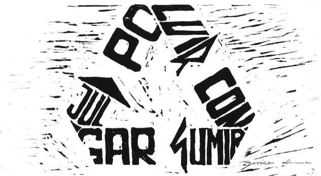
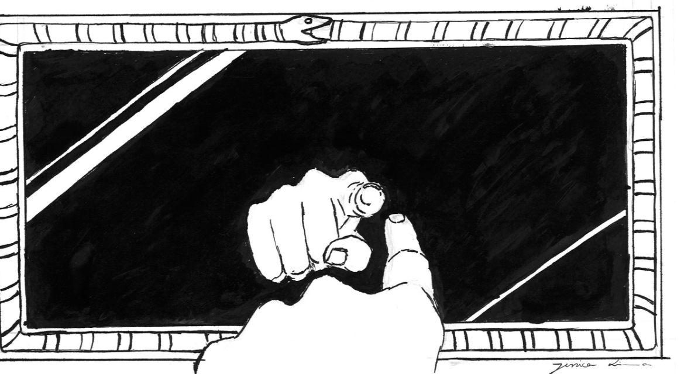
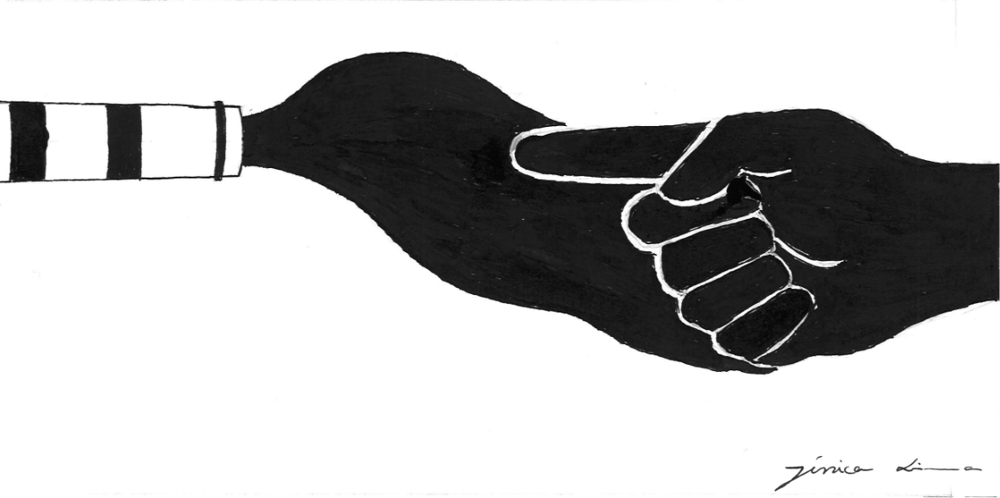

Hacer una ilustración para un periódico requiere cierto cuidado debido al peso del papel y al uso de impresión en blanco y negro. Con atención a estos hechos, la ilustración se desarrollaría en un solo color y con pocos detalles. La noticia elegida fue sobre la contaminación de dos centrales eléctricas portuguesas. Quería algo que impactara y ayudara a cambiar hábitos. Después de todo, las plantas existen porque hay quienes consumen energía. En otras palabras, la responsabilidad recae en todos nosotros.
  ng">